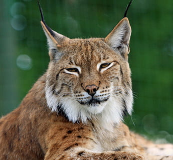
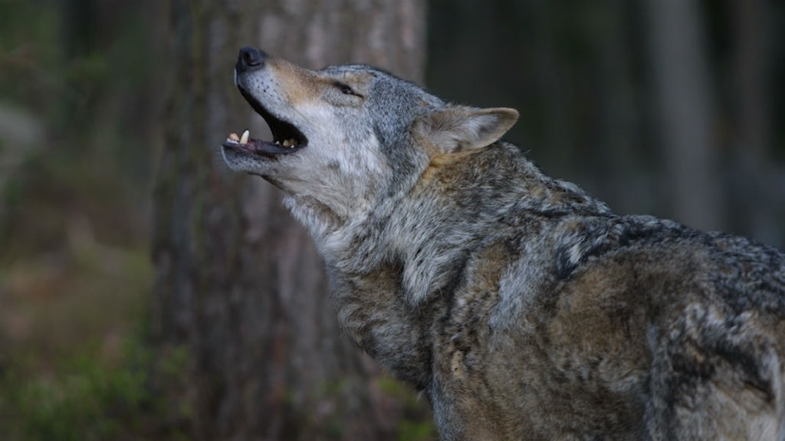
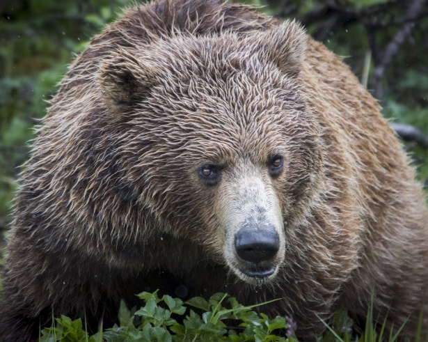
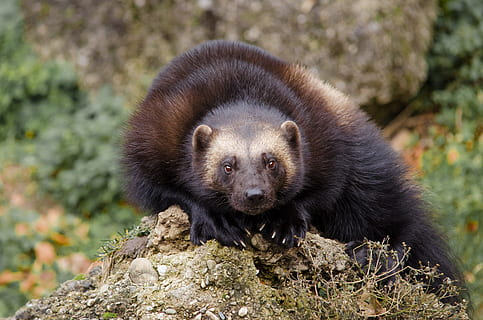
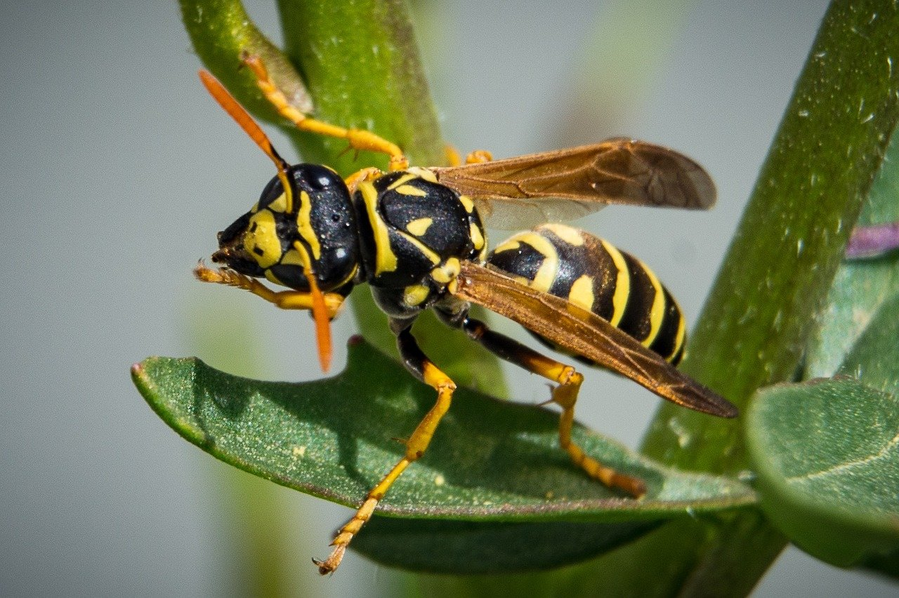

Lodjur

Lodjuret är näst vanligast förekommande av Sveriges stora rovdjur och finns över hela landet. Det är Sveriges enda vilda kattdjur och på många sätt påminner det om våra tama katter. Det är expert på en smygande jakt, men saknar uthållighet på längre sträckor. Det skygga lodjuret rör sig mest i skogen och är främst aktivt på natten. I Sverige lever lodjuren främst av rådjur och renar, vilka de normalt dödar efter en kort jakt med ett mycket anpassat bett över strupen. Lodjuret dödar ungefär ett bytesdjur per vecka och det händer att även får och lamm faller offer för deras kliniska strupbett.
Lodjuret har en kort kropp med långa ben och stora tassar. Bakbenen är längre än frambenen vilket gör att lodjurets rygg lutar. Den skandinaviska lon är den största av de fyra lodjursarterna i världen. Det latinska namnet lynx betyder ”lysa” och syftar på lodjurets päls som enligt gammal svensk folktro kunde lysa i mörker. Under sommaren är lodjurets päls slät och kan variera mellan gulbrun och rödbrun, de flesta lodjur har även svarta fläckar i pälsen. Vinterpälsen är mycket tjock och har en ljusare grå färg.
Snabb fakta:
- Latinskt namn: Lynx lynx
- Ordning: Rovdjur (Carnivora)
- Familj: Kattdjur (Felidae)
- Vikt: Hane 20–25 kg, hona 16-20 kg
- Mankhöjd: 60–70 cm
- Längd: Ca 100 cm
- Antal ungar: 1–4 (oftast 2)
Varg

Vargen är utan tvekan världens kraftfullaste hunddjur. Den lever i familjegrupper i större revir. Namnet ”Varg” betyder på gammal svenska ”dräpare” eller ”tjuv” och är ett så kallat noanamn. Det är namn som användes under vidskepliga tider då originalnamnet ”ulv” ansågs bringa olycka att uttala. Andra noanamn på vargen är gråben, tasse eller den gråe. Även ordet ”Tassemarker” är ett noanamn för ”revir”. Nästan alla nordeuropeiska länder har haft samma ord för detta stora hunddjur; wolf, wulf m fl.
De allra flesta vargar är betydligt större och framför allt mer högbenta än hundar. Ansiktspartiet kännetecknas av ljusare kind- och hakpartier. Dessa ljusa partier når aldrig över ögonen. Medelvikten för vuxna hanar av den euroasiatiska vargen (som nu lever i Sverige) är 35–50 kg och för tikar 30–40 kg. Honor är 3-12 procent mindre i storlek än hannar och har följaktligen 20-25 procent lägre kroppsvikt.
Snabb fakta:
- Latinskt namn: Canis lupus lupus
- Ordning: Rovdjur (Carnivora)
- Familj: Hundjur (Canis)
- Vikt: Hane 35–50 kg, hona 30–40 kg
- Mankhöjd: 80 – 85 cm
- Längd: 100 - 150 cm
- Antal ungar: oftast 5-6
Kungsörn

Kungsörnen är en mäktig rovfågel med sitt imponerande vingspann på omkring två meter. Endast havsörnen är något större. Att man använder uttrycket "örnblick" om någon som ser bra är ingen slump - kungsörnar och andra örnar har ovanligt skarpsynta ögon, bland de skarpaste av alla slags djur. Ögonen är stora i förhållande till huvudet och har extremt stora pupiller. Studier visar att örnar kan upptäcka en kanin på upp till 3,5 km avstånd!
I Sverige häckar kungsörn i fjälltrakterna från norra Dalarna till Torne lappmark, i barrskog från mellersta Dalarna och Hälsingland till Torneälven i Norrbotten samt på Gotland och i Skåne. Den har även etablerat sig med enstaka par i flera andra landskap i Götaland och södra Svealand. 57% av fåglarna återfinns i Västerbottens och Norrbottens län. Den förekommer idag i hela Norrland utom allra närmast kusten.
Snabb fakta
- Latinskt namn: Aquila chrysaetos
- Ordning: Rovdjur (Carnivora)
- Familj: Fåglar (Aquila)
- Vikt: 2,5-7 kg
- Längd: 66 – 100 cm
- Vingspann: 180 - 230 cm
- Antal ungar: 1-2
Björn

Brunbjörnen är en välkänd och populär nalle. Björnen är dessutom en riktig bjässe och kan väga över 300 kilo om det rör sig om en fullvuxen hane! På vintern går björnen och lägger sig i sitt ide för att kika fram framåt vårkanten.
Björnar är riktiga allätare och äter mycket bär (t. ex. blåbär och kråkbär) som den hittar i skogen. Björnen äter även andra sorters växter och örter. Om sommaren jagar även björnarna bytesdjur. De svenska brunbjörnarna får främst tag i älg- och renungar. Björnarna Ester och Glok som bor i parken tycker mycket om frukt, som banan och melon. Honung är också en favorit!
Snabb fakta
- Latinskt namn: Ursus arctos
- Ordning: Rovdjur (Carnivora)
- Familj: Björnar (Ursidae)
- Vikt: 100 - 300 kg
- Mankhöjd: 70- 150 cm
- Längd: 200 - 300 cm
- Antal ungar: 1-4 (oftast 2-3)
Järv

Järven är vårt största mårddjur. Järven håller sig för sig själv och jagar bytesdjur på fjället. Vintertid fungerar de stora tassarna som snöskor när järven framgångsrikt jagar sitt favoritbyte renen. Bytet förvaras i hålor som grävts i snön och fungerar som kylskåp.
Järven håller sig för sig själv och är något av en enstöring. De lever på fjället där de rör sig i en för järven typisk galopp. De är snabba och kan springa i en hastighet på upp till 45 km/h. De är duktiga på att både klättra och springa, och deras stora tassar fungerar som snöskor som fördelar vikten på snön.
Snabb fakta
- Latinskt namn: Gulo gulo
- Ordning: Rovdjur (Carnivora)
- Familj: Mårddjur (Mustelidae)
- Vikt: 9-18 kg
- Mankhöjd: 45 cm
- Längd: 35-45 cm
- Antal ungar: oftast 1-3
Geting

Getingar är rovdjur och fångar insektslarver som de utfodrar sina egna larver med. Vuxna djur dricker främst nektar. Getingen har en gadd utan hullingar, som gör att den kan sticka flera gånger. Getingarna finns över hela världen och det finns både solitära och sociala arter.
Man skiljer på solitära och sociala getingar. De solitära lever inte i samhällen och har ingen arbetarkast, bara honor och hanar. Honorna bygger egna bon av lera eller så utnyttjar de redan befintliga håligheter i trä där de lägger sina ägg. Varje ägg förses med ett förråd av insektslarver som honan förlamat med sitt gift. De blir sedan föda åt den egna larven.
Snabb fakta
- Latinsk namn: Vespidae
- Ordning: Steklar (Hymenoptera)
- Familj: Getingar (Vespidae)
- Vikt: 90 mg
- Längd: 11–16 mm
- Antal ungar (i ett bo): 3000 - 6000